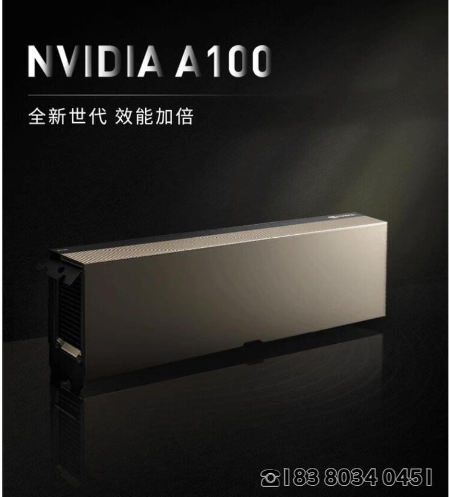

NVIDIA A100 80GB PCIe

Ampere 数据中心加速卡，6912 个 CUDA 核心与 80GB HBM2e 显存，AI 训练与高性能计算的行业标准硬件，没有视频输出的纯算力怪兽，长期一卡难求。
客观评测
A100 80GB PCIe 版搭载 GA100 核心、432 个第 3 代 Tensor 核心与 80GB HBM2e 显存，带宽约 1.9TB/s，是大模型训练与 HPC 的主力硬件。它支持 TF32、BF16、FP64 等多精度计算与 MIG 分区，单卡可虚拟多个实例。PCIe 版 TDP 300W，SXM 版走 NVLink。该卡无显示输出，生态面向数据中心，采购成本远高于消费级产品。
主观点评
A100 是 AI 浪潮里的“硬通货”，以至于它的价格本身就成了一种行业新闻。80GB 显存摸到了大模型训练的门槛，MIG 分区又让集群调度优雅了许多。它没有灯效、没有风扇美学，跑起来像一台印钞机——安静、稳定、昂贵。对个人用户它是遥不可及的存在，但对整个行业，它是把想象变成模型的那块基石。等到下一代普及之时，今天的 A100 依然会是教科书里的经典。
优点与不足
- 80GB HBM2e 与近 2TB/s 带宽，大模型训练从容
- FP64/TF32/BF16/FP16 全精度支持，HPC 与 AI 通吃
- MIG 分区让一张卡服务多个任务，利用率高
- 价格高昂且渠道波动大，个人用户难以承受
- 无视频输出、需专用平台与驱动，不能当普通显卡用
参数规格
| GPU 核心 | GA100（Ampere），台积电 7nm |
|---|---|
| CUDA 核心 | 6912 个 FP32 |
| Tensor 核心 | 432 个（第 3 代），支持 TF32/BF16/FP64 |
| 显存容量 | 80GB HBM2e |
| 显存位宽 | 5120-bit |
| 显存带宽 | 约 1.9TB/s（PCIe 版） |
| 双精度性能 | 约 9.7 TFLOPS FP64（带 FP64 张量核心加速） |
| 单精度性能 | 约 19.5 TFLOPS FP32 |
| TDP | 300W（SXM 版 400W） |
| 总线接口 | PCIe 4.0 ×16（SXM 版走 NVLink） |
| 视频输出 | 无，纯计算加速卡 |
| 互联 | NVLink 支持（SXM 版）、MIG 多实例分区 |
| 特色技术 | MIG 分区、结构化稀疏、NVLink 高速互连 |
| 上市 | 2021 年（80GB HBM2e 版本） |